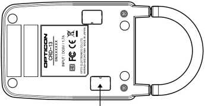

| Image |

|
| Dip-switches |
CRD13
You can find the DIP switch bank under one of the rectangular black plastic covers at the bottom of the CRD13. The arrow in the drawing above indicates which one.
| DIP switch |
Function |
ON |
OFF |
Factory
defaults |
| 1 |
Baudrate |
See baud rate table below |
See baud rate table below |
ON |
| 2 |
Baudrate |
See baud rate table below |
See baud rate table below |
ON |
| 3 |
Baudrate |
See baud rate table below |
See baud rate table below |
ON |
| 4 |
Data bits |
7 bits |
8 bits |
OFF |
| 5 |
Parity bits |
See parity table below |
See parity table below |
OFF |
| 6 |
Parity bits |
See parity table below |
See parity table below |
OFF |
| 7 |
Stop bits |
Two |
One |
OFF |
| 8 |
Reserved for future use |
|
|
OFF |
| Baudrate |
Switch 1 |
Switch 2 |
Switch 3 |
Pulses |
| 115200 |
OFF |
OFF |
OFF |
0 |
| 57600 |
ON |
OFF |
OFF |
1 |
| 38400 |
OFF |
ON |
OFF |
2 |
| 19200 |
ON |
ON |
OFF |
3 |
| 9600 |
OFF |
OFF |
ON |
4 |
| 4M |
ON |
OFF |
ON |
Cannot be set |
| Auto baudrate |
ON |
ON |
ON |
|
| Parity |
Switch 5 |
Switch 6 |
| No Parity |
OFF |
OFF |
| Odd Parity |
ON |
OFF |
| Even Parity |
OFF |
ON |
|
| Auto baudrate |
When the CRD13 is set to 'autobaudrate', the PC controls the setting of
the CRD baudrate controller. In order to be able to do that, the PC uses
the DTR and RTS lines. The procedure to set the baudrate is shown below:
First pull DTR and RTS high.
Reset the CRD13 baudrate controller by pulling RTS low and high again.
To select the required baudrate, the DTR line is cycled the requisite number
of times while RTS remains high. Each time the DTR line is cycled
(pulled low, pulled high) this causes the baudrate to cycle the list
above. (See the pulses column)
The minimum delay is 15 ms, so keep the level of RTS/DTR steady for at least 15ms.
|
| CRD13GSM |
CRD13GSM
The CRD13GSM is a charging and GSM modem cradle for the H13. Data is
transmitted to a remote host through a cellular data connection to the Internet.
The CRD13GSM must be provisioned with an active SIM card to make a cellular data
connection.
The CRD13GSM is equipped with an IrDA interface allowing data transfer when the
scanner is inserted for charging. H13 applications that wish to communicate with
remote hosts over the cellular connection must use the TCP/IP library, provided in
this kit.
|